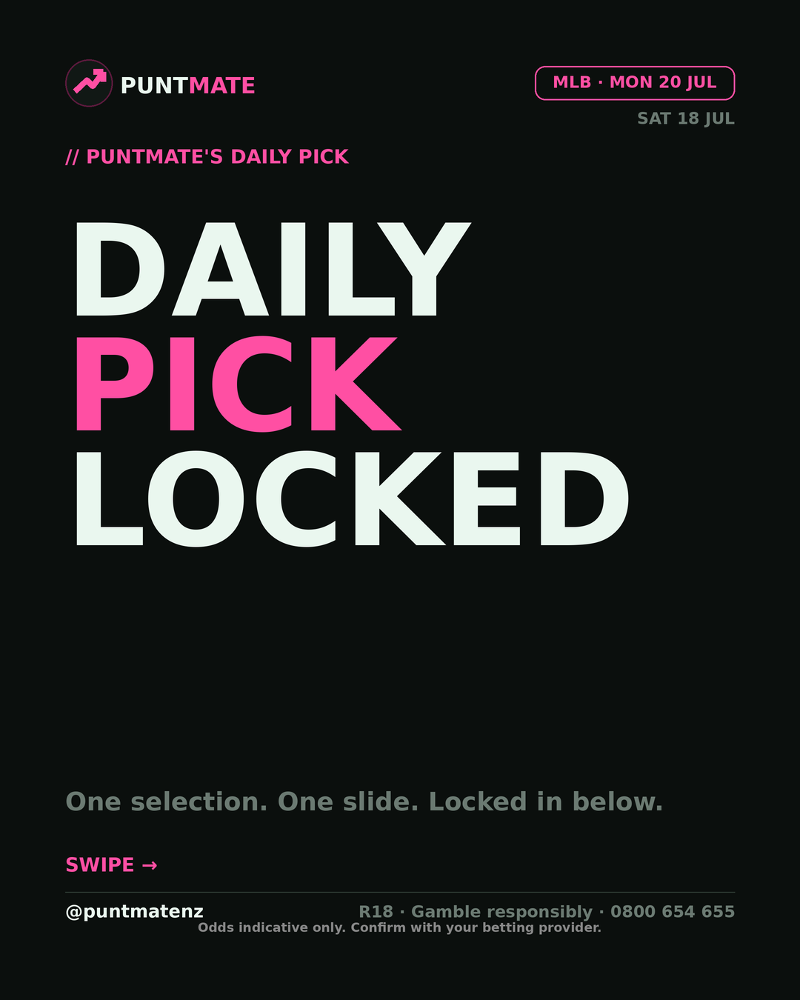
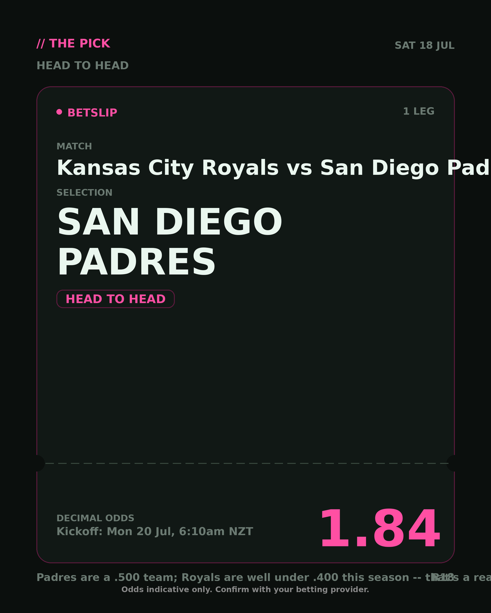
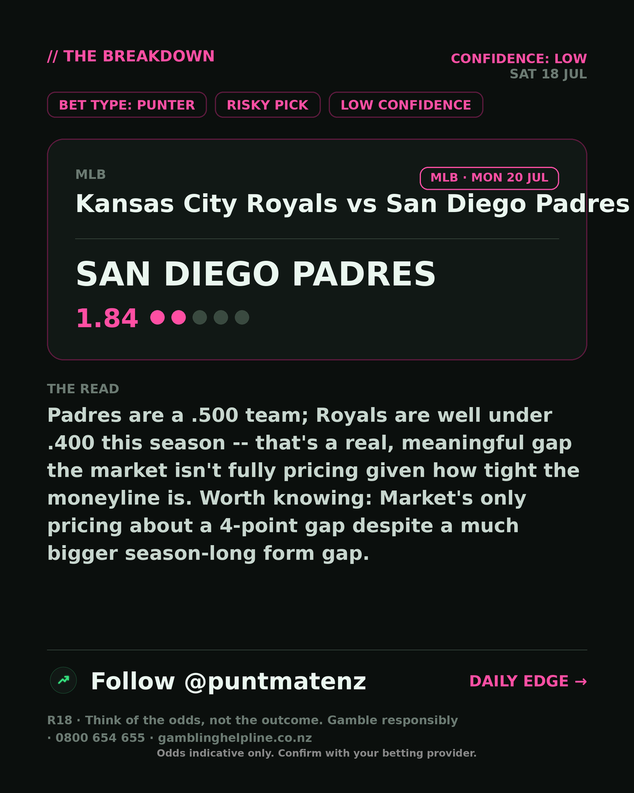

*🎯 PUNTMATE NZ — MLB* 🏟 Kansas City Royals vs San Diego Padres *PICK:* SAN DIEGO PADRES *ODDS:* 1.84 (Head to Head) *BET TYPE: PUNTER* _Padres are a .500 team; Royals are well under .400 this season -- that's a real, meaningful gap the market isn't fully pricing given how tight the moneyline is. Worth knowing: Market's only pricing about a 4-point gap despite a much bigger season-long form gap._ ────────────────── 📲 Join Telegram for daily picks R18 · Gamble responsibly · Problem Gambling Foundation NZ: 0800 664 262
🎯 MLB — Kansas City Royals vs San Diego Padres SAN DIEGO PADRES @ 1.84 (Head to Head) BET TYPE: PUNTER Solid touch here. Not a lock, but the value's real and the form backs it up. Padres are a .500 team; Royals are well under .400 this season -- that's a real, meaningful gap the market isn't fully pricing given how tight the moneyline is. Follow for daily value picks → @puntmatenz Problem Gambling Foundation NZ: 0800 664 262 #PuntmateNZ #SportsBetting #NZTAB #MLB
| has_pick | True |
| pick_id | 2026-07-19_Kansas_City_Royals_vs_San_Diego_Padres_dryrun |
| run_id | sunday-multi-test |
| generated_at | 2026-07-18T09:59:17.100451+00:00 |
| post_date | 2026-07-19 |
| match | Kansas City Royals vs San Diego Padres |
| sport | baseball_mlb |
| sport_label | MLB |
| market | Head to Head |
| selection | SAN DIEGO PADRES |
| odds | 1.84 |
| bet_type | PUNTER_BET |
| bet_type_label | BET TYPE: PUNTER |
| bet_type_reason | Solid touch here. Not a lock, but the value's real and the form backs it up. Padres are a .500 team; Royals are well under .400 this season -- that's a real, meaningful gap the market isn't fully pricing given how tight the moneyline is. |
| classification | RISKY_PICK |
| risk | RISKY_PICK |
| confidence | LOW |
| confidence_label | LOW |
| final_explanation | Padres are a .500 team; Royals are well under .400 this season -- that's a real, meaningful gap the market isn't fully pricing given how tight the moneyline is. Worth knowing: Market's only pricing about a 4-point gap despite a much bigger season-long form gap. |
| public_caution | Keep this one light — the value's there but so is the uncertainty. |
| theme | night |
| carousel_paths | ['data/review/2026-07-19_Kansas_City_Royals_vs_San_Diego_Padres_dryrun/cover.png', 'data/review/2026-07-19_Kansas_City_Royals_vs_San_Diego_Padres_dryrun/tip.png', 'data/review/2026-07-19_Kansas_City_Royals_vs_San_Diego_Padres_dryrun/breakdown.png'] |
| carousel_urls | ['https://raw.githubusercontent.com/kingofthecastle24/puntmate/main/data/cards/2026-07-19_Kansas_City_Royals_vs_San_Diego_Padres_night_1_cover.png', 'https://raw.githubusercontent.com/kingofthecastle24/puntmate/main/data/cards/2026-07-19_Kansas_City_Royals_vs_San_Diego_Padres_night_2_tip.png', 'https://raw.githubusercontent.com/kingofthecastle24/puntmate/main/data/cards/2026-07-19_Kansas_City_Royals_vs_San_Diego_Padres_night_3_breakdown.png'] |
| story_path | None |
| story_url | None |
| intended_platforms | ['telegram', 'instagram_feed', 'facebook'] |
| workflow_state | GENERATED |